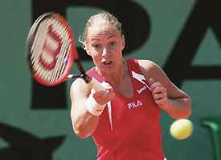
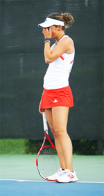

Previous: The Anti-Champions | 🏠 Mental Game Home | Next: The Best Tip Ever
The Art of Winning
Comprehensive unified tennis knowledge base — Fundamentals, Stroke Analysis, Reference Library, and more
The Art of Winning
Frank Giampaolo

What are the hidden protocols in the art of winning?
The goal of this article is to teach players how to develop the art of winning tennis matches. Often you and your opponent will appear similar in physical strength and skill. However the truth is that the victory will go to the player who has developed certain hidden mental and emotional protocols.
Working on fundamental strokes is indispensible. But the art of winning is different. Winning requires a different, advanced skill set.
In the past 9 years I have coached players who have won 68 national junior singles titles. Not one of those players had perfect fundamentals. They did however understand that the art of winning was a learned behavior.
Hidden Protocols
What are these hidden protocols?
Winners pay attention to why points are won and lost. They manage the score, their errors, and their strategies. Winners enjoy adapting to the ever changing challenges of closing out sets and matches. Winners maintain their poise under stress.

Tour players like Barbara Rettner may not be famous but can still defeat you with an A, B, or even C plan.
Pay Attention to the Opponent
A top player won't stick to a losing game. They'll often shift to a different style of play, a pre-developed Plan B, or even a Plan C. They may lose the first set with Plan A, but end up winning the match with Plan C.
Here’s an example. In the first round of the US Open, my daughter Sarah played a German veteran named Barbara Rettner. Barbara lost the first set 4-6 with her Plan A, a hard hitting baseline style.
At the beginning of the second set, Barbara shifted to her Plan B. She served and volleyed, and came to the net religiously. That didn’t work either. Sarah went up 4-1. At that point I thought to myself, "Nice, Sarah can win a match at the Open."
But then Barbara shifted to Plan C. This 30 year old, seasoned player started moonballing, hitting every shot as high as the top of the lights in front of a crowd 2000 people at the US Open.
And guess who came back to win the second set and take the third with ease? Guess who won $15,800.00 that day? You guessed it.
Why? Because Barbara took the time to develop more than one style of play, and wasn’t afraid to put that Plan C in play.
A world class forehand has defensive as well as offensive capability.
Strengths and Weaknesses
A world class forehand has offensive, neutral, and defensive qualities. A player may have a monster offensive forehand but if he or she hasn’t developed the neutral and defensive skill sets, this makes that "big" forehand attackable.
Playing neutral and defensive balls will inevitably elicit errors. Played correctly a shot that a player may perceive as a strength may actually be a weakness.
I also recommend monitoring your opponent’s strike zone. Some opponents have a sublime waist level backhand but are pitiful with a strike zone shoulder level or higher.
Often a ball hit on an arc rolling eight feet over the net is one hundred present more effective than that net skimmer you’ve spent thousands developing. Conversely, a player with heavy topspin and an extreme grip may have real difficulty with balls hit low and wide or with extreme slice.
When you identify this type of tendency, don’t stop attacking weaknesses until a player has proven repeatedly that he has solved the problem. Stick with the same old boring way of winning points.
Most players are trained to pound 78 foot groundstrokes from baseline to baseline.
Movement and Spacing
Some opponents are terrific from the baseline yet pitiful while pushed back to the back fence or pulled forward into the forecourt. Check out any tennis academy around the world and you’ll see solid ball strikers pounding their 78 foot ground strokes back and forth from baseline to baseline from dusk till dawn.
By pushing the opponent back 20 feet with high looping Plan B groundstrokes the opponent’s pre-set 78 foot drive now lands around your service line.
Developing short angles and slice strokes will assist you in comfortably pulling the opponent 10-15 feet inside the court. Now the carefully motor programmed stroke repeatedly sails past your baseline. Develop the secondary stroke skills to pull the typical baseliner out of his or her comfort zone and you’ll be famous at the club and maybe a lot of other places too.
Patterns of Play
If a certain serve pattern of yours works like a charm, revisit it on game points. If the opponent's killing you with a certain pattern expect it on big points.
If you’ve hurt an opponent with a system of play, keep attacking that wound relentlessly. In boxing, this is called "stop the bleeding and cause more bleeding".
Revisit winning patterns on game points.
If the opponent has found a weakness of yours, I suggest standing 3 steps over to stop your own bleeding. Yes, leave one side a bit vulnerable. Make the opponent prove that they have an additional level of skill to hit precisely into the opening you have given them.
Remember that the shot you hit often dictates the opponent’s response. For example, if you’re getting killed by a drop shot artist, my bet is that your feeding them short and low ground strokes. Focus on height and depth instead and you take away your opponent’s ability to respond in the same way.
Negative Emotional Cues
Remember, not all forms of communication are verbal. Watch between points for the opponent's negative facial expressions and body language as well.
Whatever caused the negative reaction, repeat it. The ability to tolerate frustration is an important part of mental and emotional warfare.
Monitor your opponent’s comfort level with length of rally and ball speed. Note their preferred court position, their speed and their stamina.
Also pay attention to their between point rituals. Who is controlling the pace of the match and the duration between points? It should be you. Once you’ve spotted things that make the opponent uncomfortable, revisit those tactics on big points.

Watch for negative emotions and body language in your opponent and repeat what causes this to happen.
Causes of Your Errors
Poor shot selection is the leading cause of unforced errors in intermediate to advanced tennis. A good teaching pro can help you spot dozens of inappropriate shot selection choices.
Basic examples include consistently creating exchanges where your opponent has the advantage. (For more on understanding the basic patterns of groundstroke exchanges, Click Here.) Another is losing a point because you served a weak second serve to the opponent’s stronger forehand.
Or you attempted a low percentage passing shot from fifteen feet behind the baseline versus throwing up a defensive lob. Or you hit an overhead seventy five mph too hard when a well placed stroke would have easily won the point.
These are just examples. But inappropriate shot selection is easy to fix and should be a leading focal point of advanced training.
Start by having a friend or coach do a "Cause of Error Chart" during an upcoming match. Make four columns: 1) Stroke Mechanics. 2) Shot Selection. 3) Movement/Spacing. 4) Emotional/Focus Control. For every error in the match, a check mark is simply placed in the appropriate column. This is a great way to organize a blue-print for improvement.
Preferred Short Ball Options
Tennis players are creatures of habit. Once they establish a protocol to handle a situation, they tend to follow it. To give one critical example: what is your opponent's short ball optional preference? What is yours?
What are your preferred short ball options—and what are your opponent’s?
There are four usual options:
Hit an approach shot
Crush a winner
Roll a short angle
Hit a drop shot.
One opponent may employ an approach shot/volley pattern while another opponent may prefer to simply crush a down the line winning groundstroke.
Which short ball option is their favorite? If you know the option an opponent is likely to use, you are prepared to react and may be able to counteract it, or even prevent your opponent from executing it by denying them the opportunity.
But remember the idea of plans A, B and C. If you have effectively handled an opponent’s favorite short ball option, you may be introduced to their second favorite, or third.
Conversely, if your opponent is able to counteract your own preferred option, are you ready to go with your own Plan B? And Plan C if necessary?
Think Like A Pitcher
Are you throwing the same 67 mph fastball, 2 feet over the net directly you’re your opponent’s wheelhouse over and over again? And then walking away from the match saying, "I had no chance! His forehand was huge!"

How many pitches do you have to use and in what situations?
The reality is that often you are the one who makes your opponent look good. A solution is to switch your focus from hitting only the strokes that make you feel good to focusing on hitting the strokes that are most uncomfortable for the opponent.
Top players don’t just have a great forehand; they have five great forehands. Drive, arc, slice, short angle, and lob. How many different forehands do you own? And do you know when to use them?
Changeover and Between Point Rituals
Most of the total time spent in matches, you aren’t actually hitting the ball. In fact about 75% of the time is in between points and games. Every player needs to know how the use of this time factors into the art of winning. The key is ritualization.
There are two types of rituals, internal and external. Top competitors use internal rituals to strategize, problem solve and to dissect the opponent. I recommend using the allocated 90 seconds between games for this type of analysis.
Proper between point rituals are just as important as changeover rituals. There are three "doors" to walk through while implementing between point rituals.
Proper between point rituals help you walk through 3 Doors.
These doors are:
1) Emotionally getting over negative past points, while at the same time, noting any mistakes technically or tactically.
2) Planning the next point’s pattern. At the higher levels, all sports teams strategize and run plays. High performance tennis--and successful tennis at any level--is no exception.
3) Applying pre-designed serve and return relaxation rituals. As Jim Loehr first pointed out, (Click Here) individual players create these personal rituals for themselves and use them to create feelings of confidence and control.
Defeating a top ranked opponent can be complicated and very challenging. You need to stay even emotionally through the ups and downs of the matches, which can often include mental warfare and gamesmanship. The right rituals keep you in the mental and emotional frame of mind to play the actual tennis you need.
Summary
In summary, mental and emotional skill sets are easy to understand and to employ. They simply have to be taught by educated coaches and tennis parents.
Tennis players who take the time to establish the protocols we’ve looked at consistently go deeper in the draws. Often they have a house full of trophies.
Athletes who develop these seemingly hidden skills perform with the sense of elite composer. They remain poised even when things aren't going well.
The ability to remain unflappable under stress is learned behavior. Winners practice these protocols with the same dedication they apply to their fundamental strokes.

Frank Giampaolo has been a leading Southern California tennis coach for 25 years, and is the author of a comprehensive new work on player development, Championship Tennis, as well as the author of The Tennis Parent's Bible. He has conducted workshops on mental training around the world, and participants have included over 60 junior players who went on to win U.S. National singles titles. He speaks regularly at coaching conventions and has made national television appearances worldwide.
To find out more about his mental and emotional training workshopsClick Here!

Championship Tennis: The All-Inclusive Guide
In this new book from Human Kinetics, Frank Giampaolo presents a life time of high level coaching insight into every aspect of tennis development--athletic assessment, skill development, the mental factor, match preparation, practice, and planning. This book is designed to help players and coaches accelerate the learning curve by customizing the process to the needs of every individual player.
CLICK HERE TO ORDER !
Source: tennisplayer.net archive — The Art of Winning.docx (John Yandell teaching library, 2002-2022). Extracted and rendered as HTML for Tennis Future Lab.